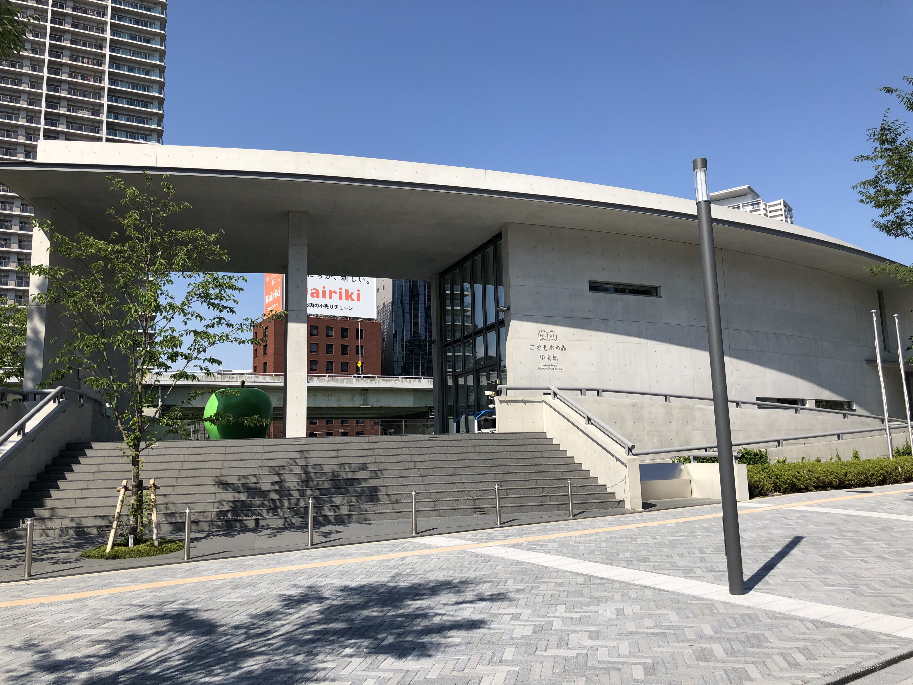

Day 1：中之島文化水岸 ✕ 藍天大廈 360° 夕陽
長榮 BR132 (12:10 抵達) ➔ HARUKA 直達梅田 ➔ GARB weeks 遲午餐 ➔ 安藤忠雄童書森林 ➔ 173m 淀川夕陽
日落約 18:40。18:00 抵達藍天大廈 173m 露天平台，搶佔最佳拍攝角！
⏱️ 當日詳細行程時間軸 (Timeline)
入境通關、提取行李。於 JR 綠色售票機或人工櫃台兌換 HARUKA 特急指定席票券 及後續的 JR 關西周遊券 2 日券。
搭乘【HARUKA 特急 24 號】直達「JR 大阪站地下 21 號月台」。下車後推行李搭電梯直上南館大廳，全程室內 0 日曬，1 分鐘直達格蘭比亞飯店大廳！
Check-in 並放下大型行李（若房間尚未備妥可免費寄存櫃台），換上輕便夏季透氣服裝出發。
 🏛️ 中之島 ✕ 公會堂
🏛️ 中之島 ✕ 公會堂
從飯店往南步行 10 分鐘（或地鐵 1 站）抵達中之島公園水岸：
・GARB weeks：公園綠意旁的窯烤柴燒披薩、當令義大利麵與冷萃冰咖啡。
・Social Eat AWAKE：百年紅磚「中央公會堂」B1，品嚐特製牛肉燴醬蛋包飯。

🌳 童書森林 ✕ 青蘋果
・童書森林 中之島：安藤忠雄設計，打卡象徵青春精神的巨型青蘋果雕塑。
・大阪中之島美術館：前衛極簡的黑盒子建築，館內挑高冷氣空間極其舒適。
・大阪市中央公會堂：1918 年興建的辰野金吾式紅磚巴洛克建築，外觀雄偉典雅。
 🌅 173m 淀川落日
🌅 173m 淀川落日
搭乘懸空穿梭電梯直達 173m 頂層 360 度露天平台：
・【18:20~18:50 核心夕陽】：俯瞰淀川與大阪灣，金色落日漸層染紅天際線。
・【18:50~19:30 藍調夜景】：地面星空螢光石步道亮起，飽覽大阪都會璀璨燈海。
・【選項 1】敘敘苑 燒肉 (Grand Front 南館 38F)：高空無敵夜景 ✕ 特選黑毛和牛燒肉。
・【選項 2】きじ (Kiji) 木地大阪燒 (藍天大廈 B1 滝見小路)：昭和排隊老舖摩登燒。
・【選項 3】備長 鰻魚飯三吃 (Grand Front 7F)：正宗備長炭烤香酥鰻魚飯。
1. 中央公會堂倒影：從檮木橋 (Naniwabashi) 側拍，紅磚建築與綠樹倒映在堂島川上最為經典。
2. 藍天大廈圓形穹頂：仰拍中央手扶電梯與鏤空穹頂，幾何構圖極具張力。
3. 門票提醒：自費購票（約 1,500 円）可於 18:00 自由入場看夕陽，避開周遊卡 16:00 前免費入場的時間限制。